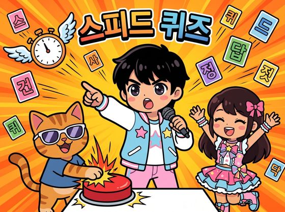
単語・瞬発力
スピードクイズ
60秒で何問とけるか。コンボでスコアが伸びる
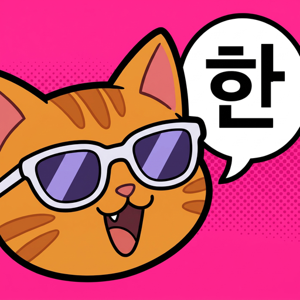
ハングルの口の形から、文法・敬語・最新の若者言葉まで。8,000語以上の単語と、ネイティブのような自然な発音の音声。ゲーム、ストーリー、教本、トレカ集め、着せ替え、推し写真。「もう1回やりたい」が続いて、気づけば韓国語が読める・聞ける・書ける・話せる。推しがいる人も、韓国ドラマ好きも、遊びながら学べる韓国語学習ゲームです。
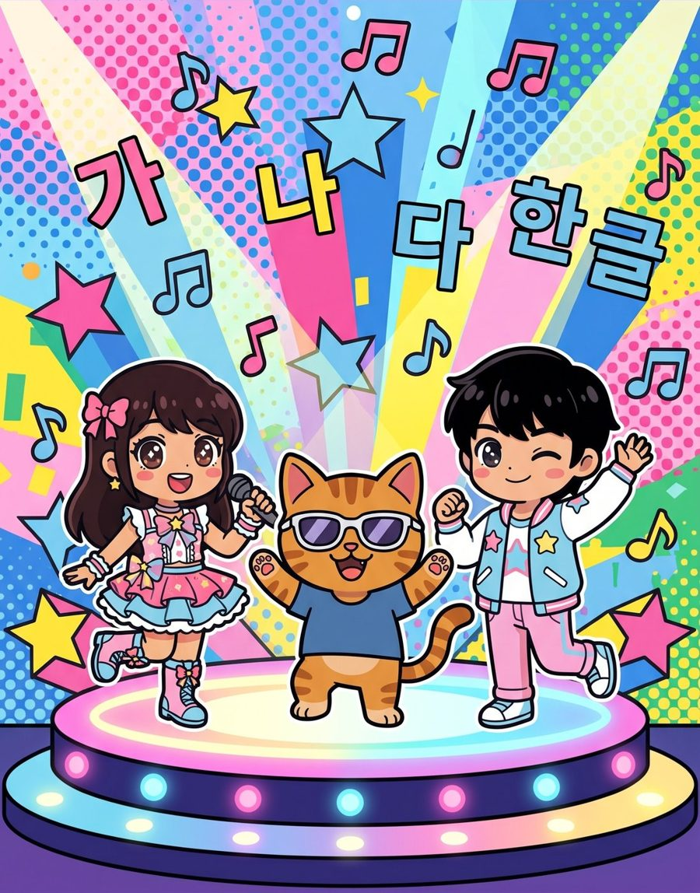
Update 1.3
問題は全600問に。25問で気軽に受けられるミニ模試と、本番に近い問題数・制限時間の本番模試。終わると点数と級の目安、そして問題タイプ別の正答率で、自分の苦手がひと目でわかります。
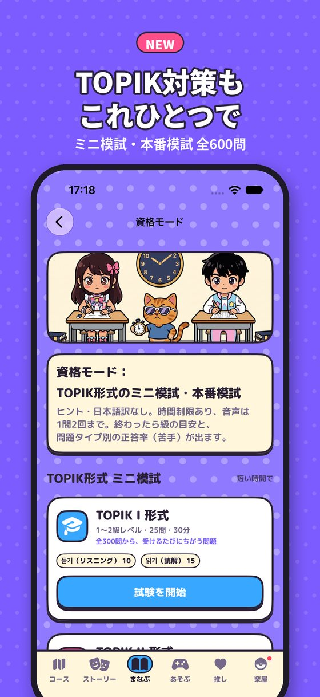
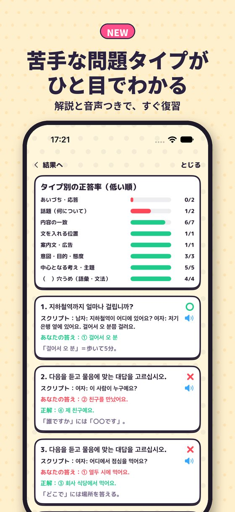
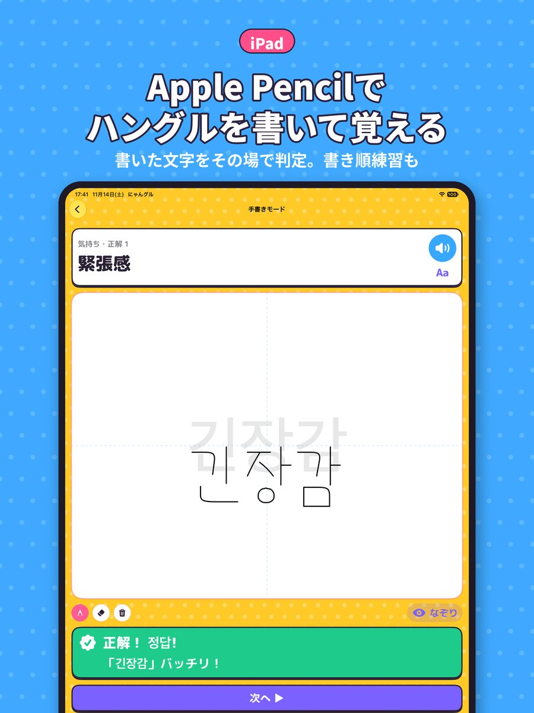
Play now
にゃんグルに入っている9種のミニゲームのひとつ「バルーンキャッチ」を、ブラウザでそのまま遊べます。DJハムが言った韓国語の風船を、空に逃げる前にタップ！
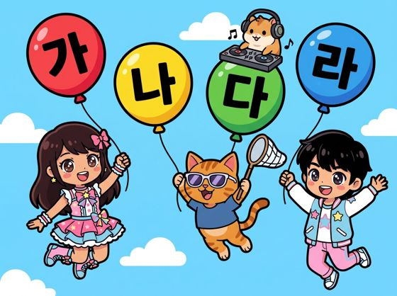
バルーンキャッチ
DJハムが韓国語を言うよ。その言葉が書かれた風船が飛んでいくので、空に逃げる前にタップして割ろう！ ちがう風船や逃がすとライフが減るよ。
体験版：入門レベルの5問
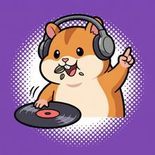
Why Nyangul
単語を覚えるだけ、問題を解くだけでは続きません。にゃんグルは「勉強」を「遊び」と「推し活」の中に溶かしこみました。
| よくある学習アプリ | にゃんグル | |
|---|---|---|
| 続ける 理由 | 連続記録だけ | ストーリー・トレカ・着せ替え・推しとの絆・毎日のミッション |
| 学び方 | 単語カードと選択問題 | コース＋教本で体系的に、9種のゲームで反復、ドラマのセリフで実践。答え方は選ぶ・キーボード・手書きから |
| 書く | ほぼ対応なし | 指・Apple Pencil の手書き判定、書き取りラッシュ |
| 打つ | 日本語キーボードのまま | 韓国の若い人と同じ並びのキーボードで、タイピングとメッセージ返信 |
| 話す・ 聞く | 音声を聞くだけ | 単語も例文も、自然な発音の収録音声。声で答えて発音を採点（ヨントン発音診断） |
| 実力の 確認 | 正答率だけ | TOPIK形式の全600問。本番模試で点数・級の目安、問題タイプ別の苦手まで |
| 自分 らしさ | — | 推しの写真をアイコン・壁紙・ホーム・クリア画面に |
| 料金 | 月額のサブスクが多い | 無料で始めて、気に入ったら買い切り（定期購入なし） |
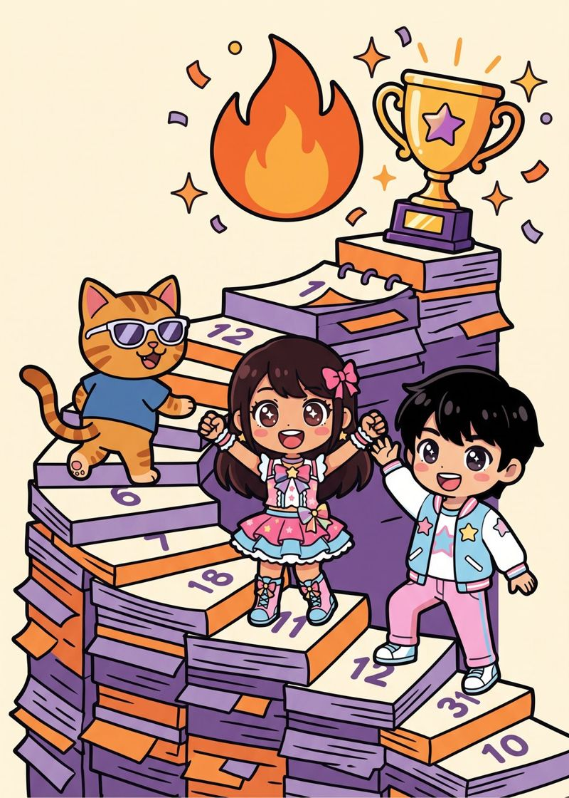
Course
ハングルの読み方から始まって、初級・初中級・中級・上級の5段階、全487ステージ。6割正解で合格、8割でハイレベル、全問正解でパーフェクト。まちがえた問題はその場で聞き直せて、忘れかけた単語は「今日の復習」に自動で出てきます。
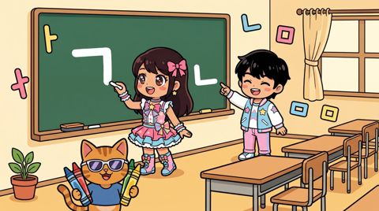
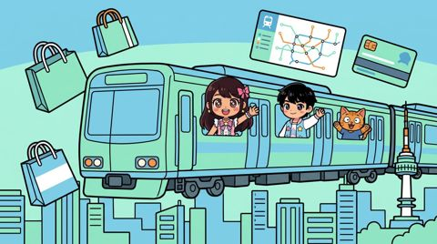
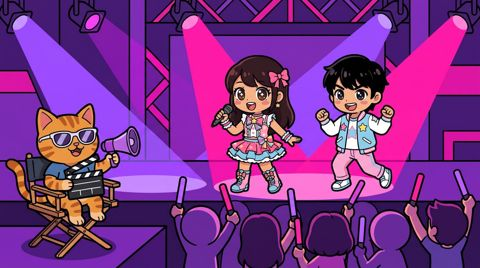
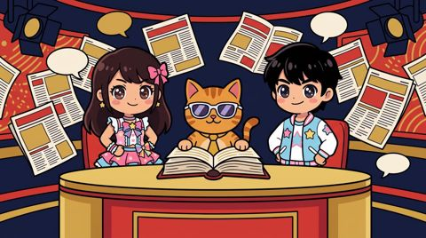
Story mode
主人公はユナ・テヒョン・ネコのニャンから選べて、名前と誕生日も自由に。スカウト、練習生の初日、屋台で腹ごしらえ、チムジルバンで作戦会議、ドラマ OST の撮影、はじめてのファンミーティング…。第1部「デビューへの道」、第2部「デビューのその先へ」、第3部「世界へ」の全3部・24章。章ごとにあいさつ・ハングルのしくみ・助詞・過去形・敬語などのテーマがあり、先生キャラのミニレッスンのあと、8問のゲームでクリアしていきます。
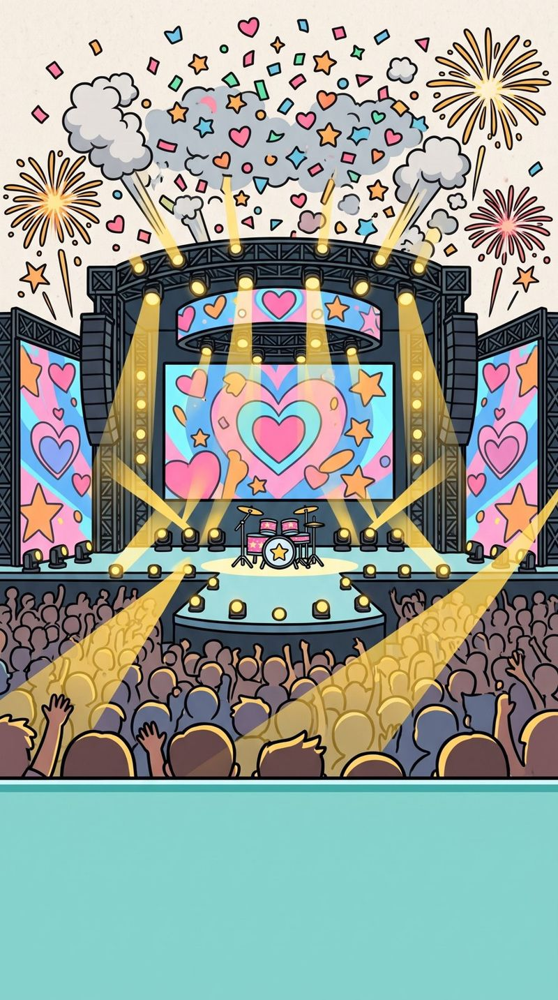
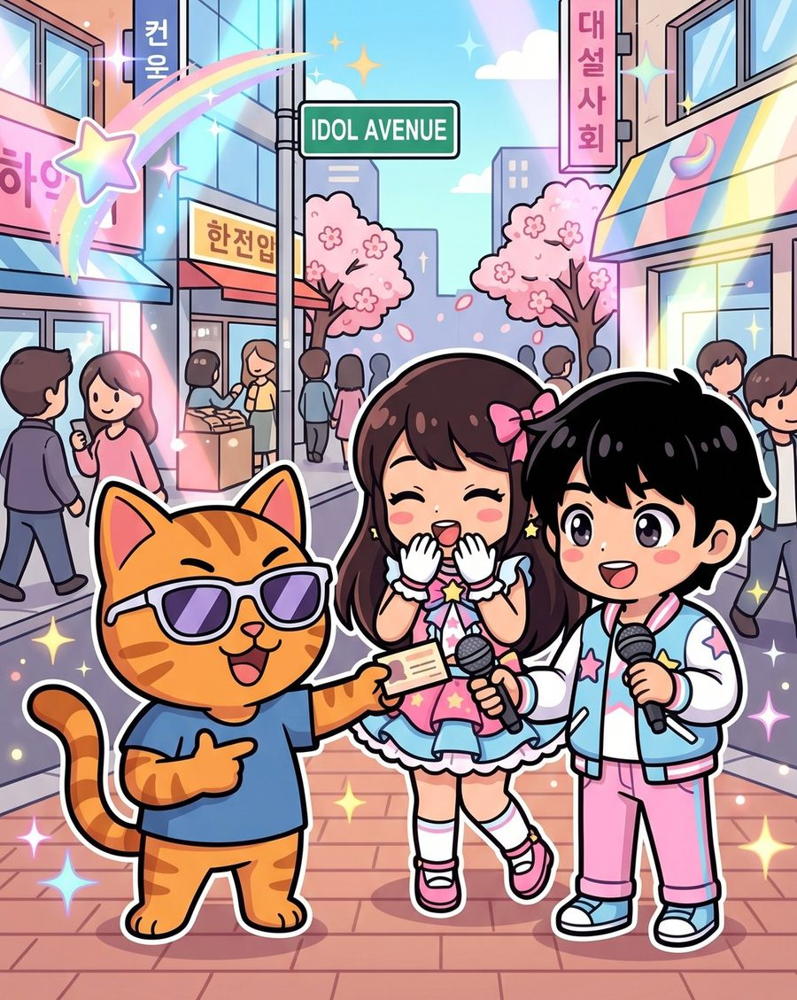
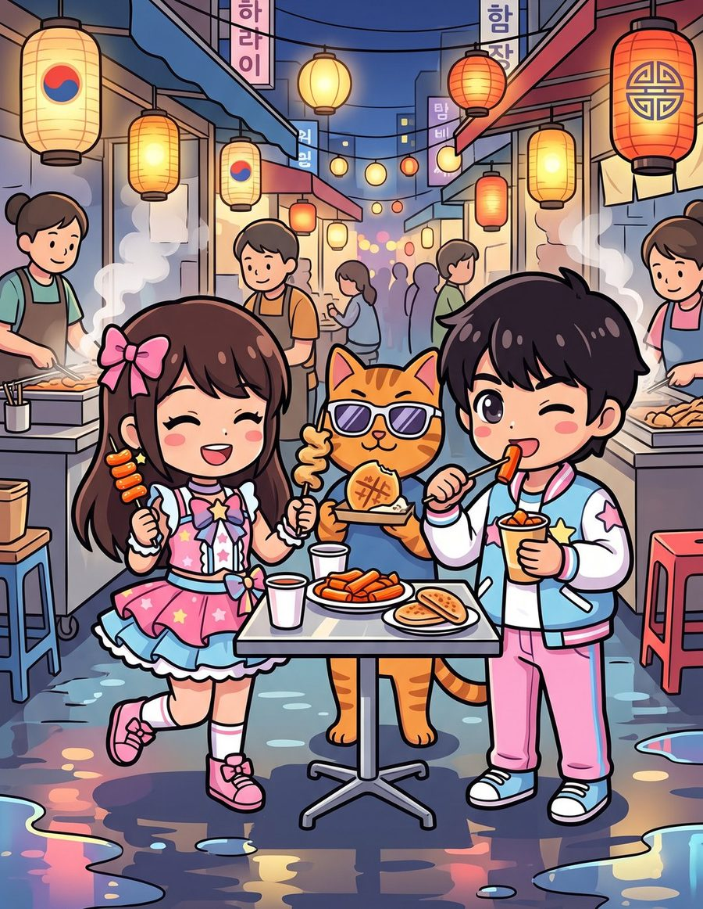
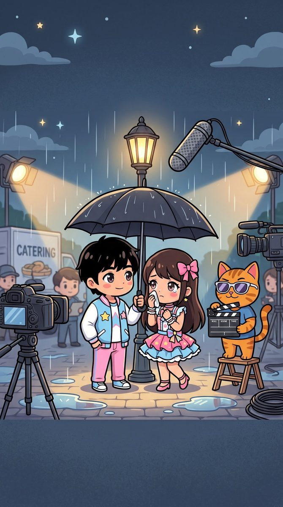
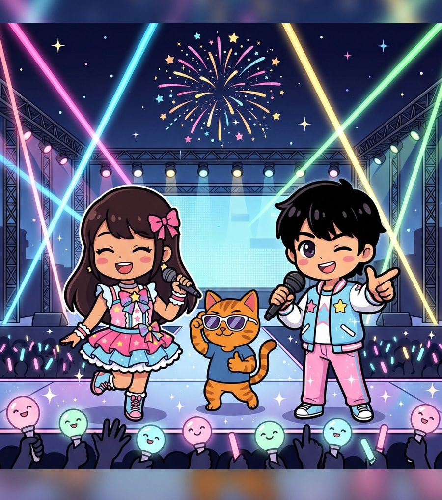
Textbook
ゲームだけでは身につきにくい「しくみ」は、教本でしっかり。「韓国語と日本語は似ている」など、まったくの初心者向けの「初歩の初歩」、ㅡ と ㅜ の口の形のちがいから、助詞・活用・変則・敬語、TOPIK 3〜6級の重要文法、書き言葉と作文の書き方、パンマル（ため口）、略語・新語・推し活用語まで。例文はすべて読み上げ（ゆっくり再生つき）、各課の最後に確認クイズ。
第2課・超入門
ㅜ は唇を丸く突き出す「ウ」。ㅡ は唇を横に引いたまま（「イ」の口のまま）出す「ウ」です。
Mini games
ゲームごとに鍛えられる力がちがいます。どれもレベル1〜5とエンドレスの6段階で、★を集めると次のレベルと衣装が開きます。「食べ物」「旅行」など、覚えたいジャンルだけにしぼって遊ぶこともできます。スコアは Game Center のランキングで、世界中のプレイヤーと競えます。盛り上がる終盤は、BGMもスピードアップ。

単語・瞬発力
60秒で何問とけるか。コンボでスコアが伸びる
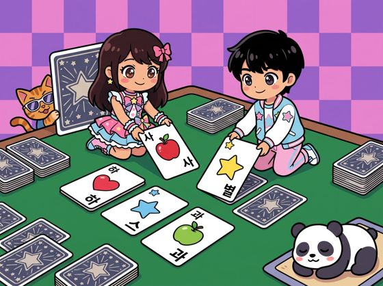
単語・記憶
韓国語と日本語のカードをペアに
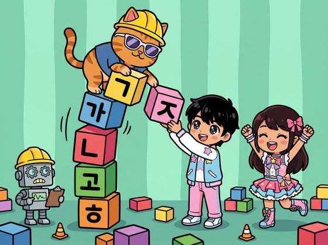
文字のしくみ
子音と母音を組み立てて文字をつくる
リスニング
聞こえた言葉の風船をタップ
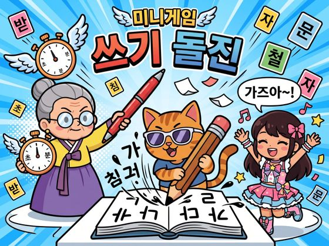
書く
指や Apple Pencil で早書き勝負
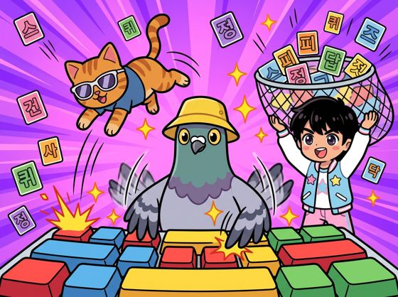
打つ
落ちてくる言葉を下に着く前に打ち返す
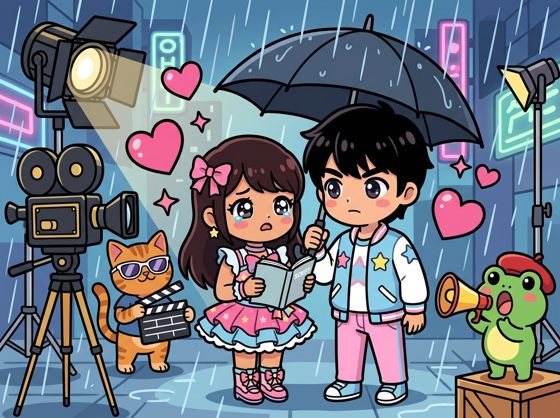
フレーズ・聞く
名セリフの（ ）に入る言葉を当てる
数え方・聞く
注文を聞いて、料理と数をそろえて出す
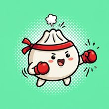
活用
動詞の다を切って、注文どおりの形に料理。マンドゥ師匠が形が変わる理由も解説
さらに、キャラごとの「キャラワールド」（21のワールド）で、プチゲームを次々にクリアするモードも。ゲームのレベル1〜3は無料で遊べます。
Trading cards
ゲーム・ミッション・ログインでコインをためて、トレカガチャへ。ニャンが登場するアニメーションの色で、レアなカードの予感が。カードは1枚ずつめくって開けて、いちばんレアなカードは最後に大きく登場します。コインはゲームで集めるもので、お金では買えません。
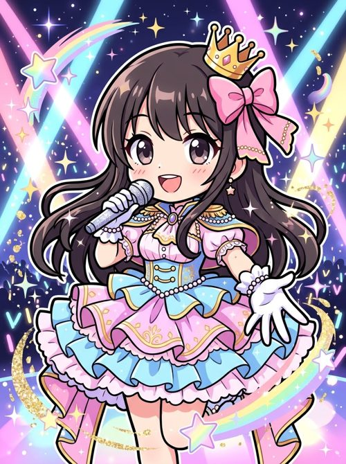
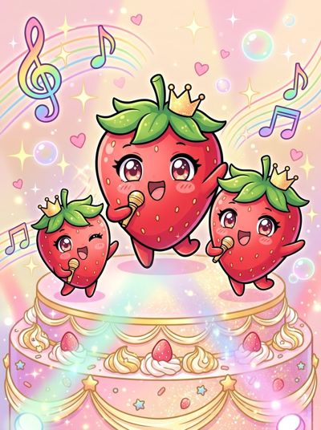
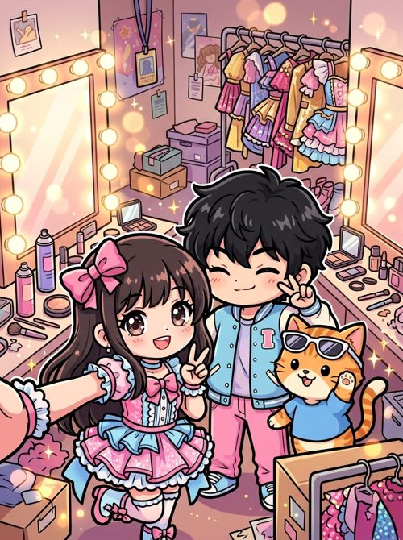
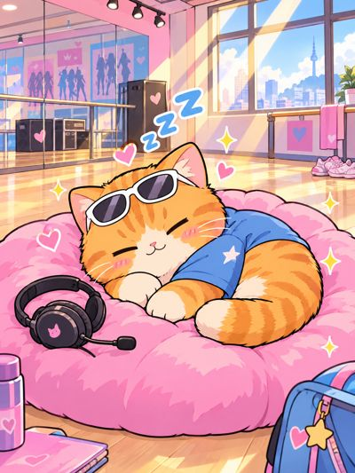
Wardrobe
ユナ・テヒョン・ニャンに12着ずつ。ゲームの★、キャラワールドの制覇、毎日の目標達成のスタンプで、新しい衣装が届きます。選んだ衣装は、コースやゲームの中のキャラにも反映されます。
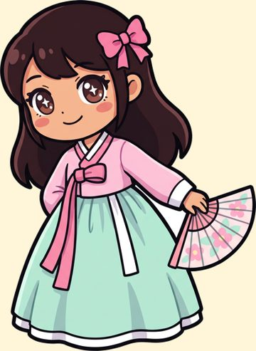
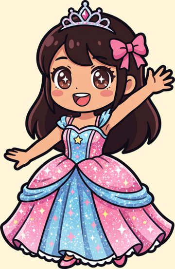
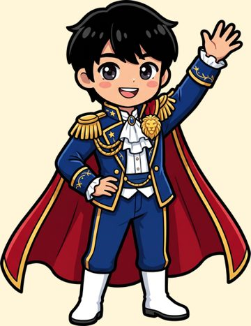
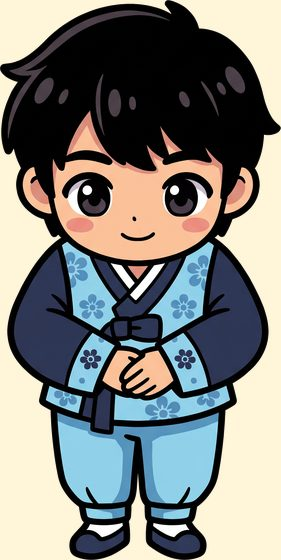
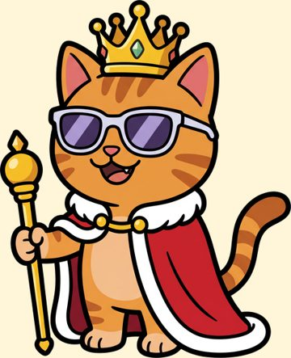
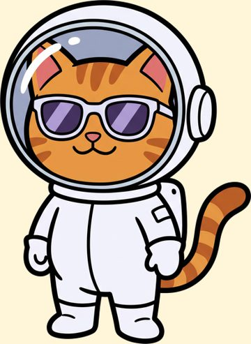
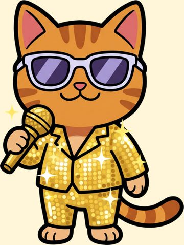
Your oshi
自分で撮った・手に入れた推しの写真を、アプリのあちこちに。指でずらして位置を、ピンチで大きさを決めてから保存できます。写真は端末の中だけに保存され、外部に送られることはありません。推し写真の差し替えは、無料版でも使えます。
トーク・ヨントン・ホームに出る、推しの顔アイコン。
コース画面いちばん上の絵を、最大5枚の写真で日替わりに。
コースやトークの背景に。文字が読みやすい暗さも調整できます。
ステージやゲームをクリアしたら、最大10枚の写真からランダムでごほうび。
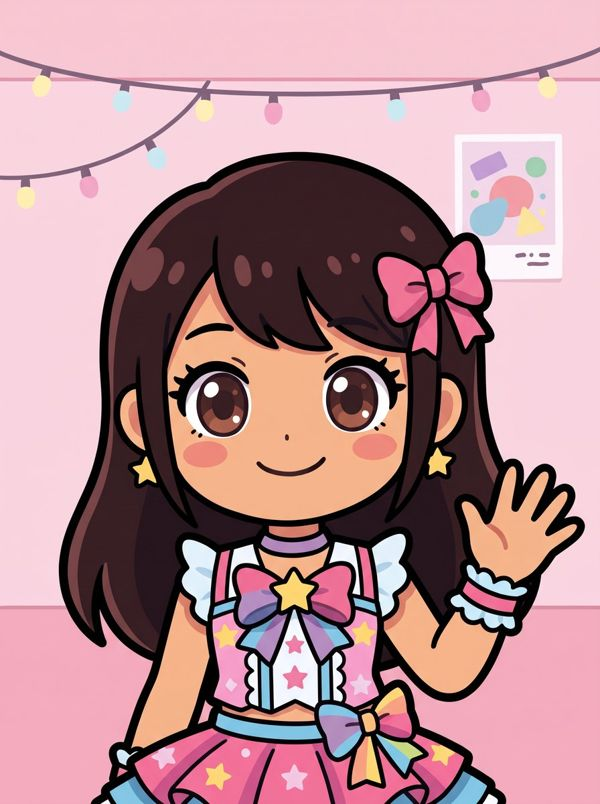
Talk & video call
推しとのトークは、選んで答えるか、声で答えるか。ヨントン（ビデオ通話）発音診断では、推しに伝わる発音かを20フレーズで採点します。話すほど推しとの「絆」が深まり、関係は10段階で進んでいきます。ストーリーの章をクリアしても絆が深まり、いちばん上まで行くと特別な演出とメッセージが。
Write · Type · Listen · Speak
「読めるけど書けない」「聞けるけど話せない」をなくすために、5つの力をそれぞれの練習で。
指で書いたハングルを判定。iPad なら Apple Pencil で、ノートに書くように本格的な書き取りを。
韓国の若い人と同じ並びのキーボードで練習。iPhone の韓国語キーボードにも切り替えられます。
推しから届いたメッセージに、韓国語で返事を打つ。実際のやりとりでそのまま使える30問。
聞いて意味を選ぶ・聞こえた通りに書く。10問1セットで、ゆっくり再生もできます。
場面ごとの会話に、3択で答えるか、自分で話して・書いて答えるか。ヒントつき。
全単語を検索できる辞書と、カテゴリ・場面ごとの10問セット。苦手な単語だけの表示も。
まちがえた単語は自動でノートに。ジャンル別の正解率で、苦手なところがひと目でわかります。
約3万本の音声を、AI音声合成であらかじめ収録。単語・例文・会話・キャラのセリフまで、聞き取りやすい自然な発音です。
Exam mode
ヒントも日本語訳もなし。時間制限つきで、リスニングは1問2回まで。TOPIK I・IIあわせて全600問のオリジナル問題から、25問のミニ模試と、本番に近い問題数・制限時間の本番模試（TOPIK I：70問・100分／TOPIK II：102問・140分）を、毎回ちがう組み合わせで出題します。終わったら点数と級の目安、「あいづち」「中心となる考え」「文を入れる位置」など問題タイプ別の正答率、全問の解説と音声まで。単語にもTOPIKの級の目安を表示。途中で一時保存して、あとから続きも受けられます。
※TOPIK形式の問題・点数・級の目安は本アプリのオリジナルで、実際の試験とは関係ありません。音声はAI音声合成で作った収録音声です。
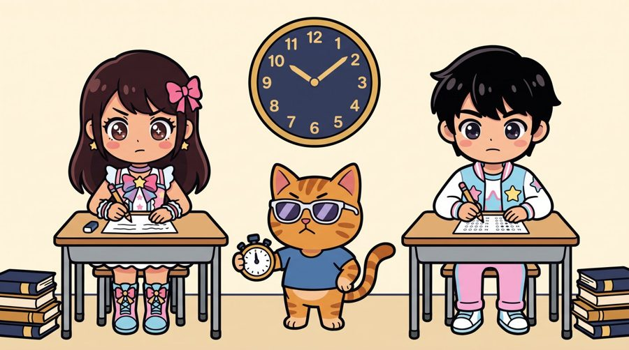
Every day
毎日変わる3つのミッション。全部クリアでボーナスコイン。
自分で決めた目標XPを達成するとスタンプとコイン。目標が高いほどごほうびも大きく。
キャラの誕生日にはお祝いの演出と、その日だけの誕生日カード。主人公の誕生日は好きな日に設定できます。
忘れかけた単語を、ちょうどいいタイミングで出題。1日1回のクリアでボーナスコイン。
コースを卒業すると、名前入りの卒業証書とごほうび。全コースを終えると、推しから修了証を受け取れます。
Characters
DJ のハムスター、ハモる三つ子のイチゴ、ドラマの名監督のカエル、財閥3世の室長まで。キャラ図鑑では、それぞれのプロフィールと口ぐせ（読み上げつき）が見られます。
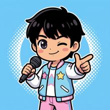
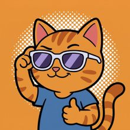
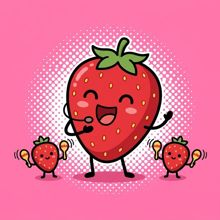
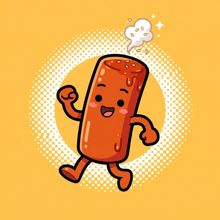
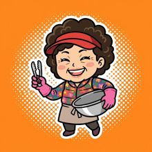
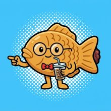
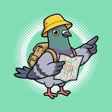
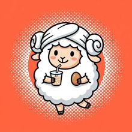
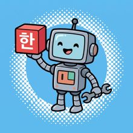
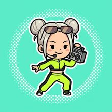
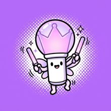
※登場するアイドル・キャラクターはすべて架空です。
Price
入門〜初中級のコース、ストーリーの第1〜9章、ミニゲームのレベル1〜3、教本の超入門・初級、推し写真の差し替え、辞書などは無料で遊べます（無料版は広告あり）。プレミアムは1回払いの買い切りで、定期購入ではありません。同じ Apple アカウントなら、機種変更しても「購入を復元」でそのまま。
2,000円1,400円 買い切り（30%OFF）
FAQ
大丈夫です。はじめて開いた時にレベルを聞いて、どこから始めるといいかをアドバイスします。入門コースと教本の超入門は、ハングルの文字のしくみと口の形から始まり、韓国語の下にカタカナの読み（カナルビ）も表示できます。
はい。iPhone と iPad の両方に対応しています。iPad では文字やキャラを大きく表示します。iCloud で記録が同期されるので、外では iPhone、家では iPad で続きから遊べます。iPad では Apple Pencil での書き取りもできます。
はい。アプリの設定で表示を英語にすると、教本も含めて英語で学べます。
いいえ。トレカのコインはゲームやミッションで集めるもので、お金では買えません。課金はプレミアムの買い切り1回だけです。
ほかのご質問は サポートページ へ。